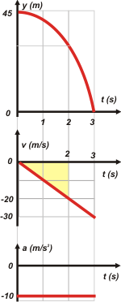
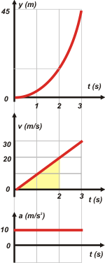

|  |
Mirá lo que te hice. Lo resuelvo por partida doble, para que puedas elegir a gusto. O mejor aún, para que veas que la elección del SR es una arbitrariedad que no modifica los resultados.
A la izquierda SR positivo hacia arriba significa g = -10 m/s². y velocidad en descenso.
A la derecha SR positivo hacia abajo significa g = 10 m/s². y velocidad en ascenso.
Ahora mirá los triangulitos sombreados en cada caso:
A izquierda el desplazamiento entre 0 y 2 s vale 20 metros y representa un desplazamiento negativo o sea que si la piedra parte en el metro 45 ahora tiene que estar en el metro 25. |
 |